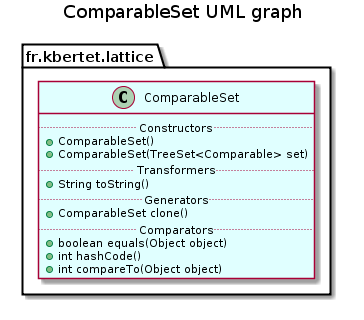

public class ComparableSet extends TreeSet implements Comparable, Cloneable
This class gives a minimal representation of a comparable set where sets are compared using the lectic order.
This class extends class TreeSet, implements class Comparable and provides a compareTo(java.lang.Object) method that implements the lectic order between two sets.
Therefore, a comparable set can be stored in a sorted collection, and in particular in a sorted set where set operations are provided.
The lectic order extends the inclusion, and is defined only for comparable elements, i.e. elements that can be sorted, as follows:
“a set A is smaller than a set B iff there exists an element in B\A such that any smaller element belonging to A also belongs to B.”
Check if this class is correctly used (performance). Overload modification method to compute the hashCode only once.

| Constructor and Description |
|---|
ComparableSet()
Constructs a new and empty ComparableSet.
|
ComparableSet(TreeSet<Comparable> set)
Constructs a new ComparableSet with the set from the specified set.
|
| Modifier and Type | Method and Description |
|---|---|
ComparableSet |
clone()
Returns a clone of this component.
|
int |
compareTo(Object object)
Compares this component with those in parameter according to the lectic order.
|
boolean |
equals(Object object)
Compares this component with the specified one.
|
int |
hashCode()
Compute the hash code.
|
String |
toString()
Returns a string representation of this component without spaces.
|
add, addAll, ceiling, clear, comparator, contains, descendingIterator, descendingSet, first, floor, headSet, headSet, higher, isEmpty, iterator, last, lower, pollFirst, pollLast, remove, size, subSet, subSet, tailSet, tailSetremoveAllcontainsAll, retainAll, toArray, toArraypublic ComparableSet()
Constructs a new and empty ComparableSet.
public ComparableSet(TreeSet<Comparable> set)
Constructs a new ComparableSet with the set from the specified set.
set - a comparable setpublic String toString()
Returns a string representation of this component without spaces.
toString in class AbstractCollectionpublic ComparableSet clone()
Returns a clone of this component.
public boolean equals(Object object)
Compares this component with the specified one.
equals in interface Collectionequals in interface Setequals in class AbstractSetobject - An object to compare withpublic int hashCode()
Compute the hash code.
hashCode in interface CollectionhashCode in interface SethashCode in class AbstractSetpublic int compareTo(Object object)
Compares this component with those in parameter according to the lectic order.
The lectic order defines a sort on sets of elements extending the inclusion order as follows:
A set A is smaller than a set B iff there exists an element in B\A such that any smaller element belonging to A also belongs to B. The result is - zero if the identifiers are equal; - 1 if this component’s identifier is greater, - -1 otherwise.
This comparison method is needed to define a natural and total sort on a sets.
It allows to use sets of this class in a sorted collection
compareTo in interface Comparableobject - the specified element to be compared with this componentIs this correct? (see test)
Copyright © 2010–2014 Karell Bertet. All rights reserved.